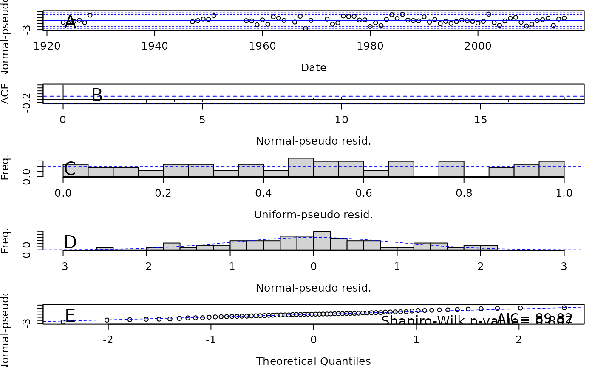
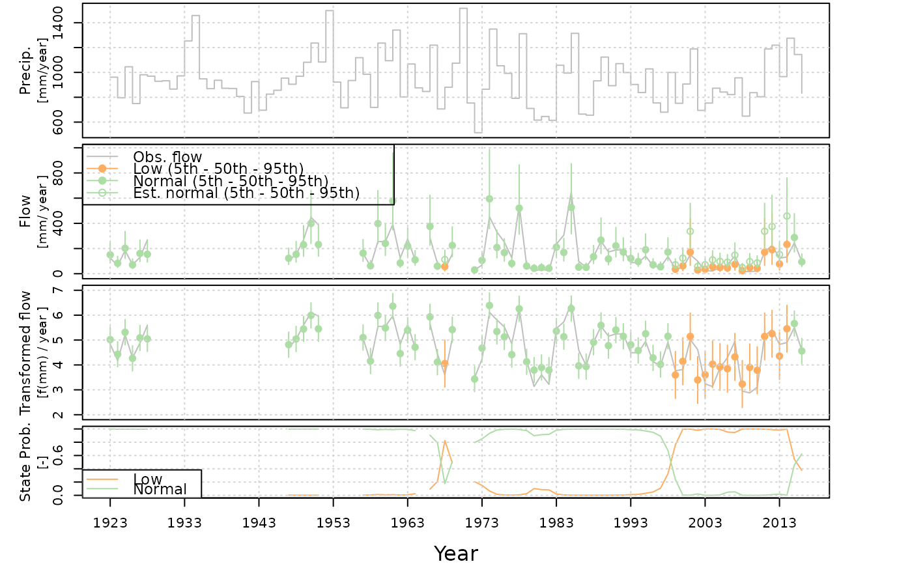
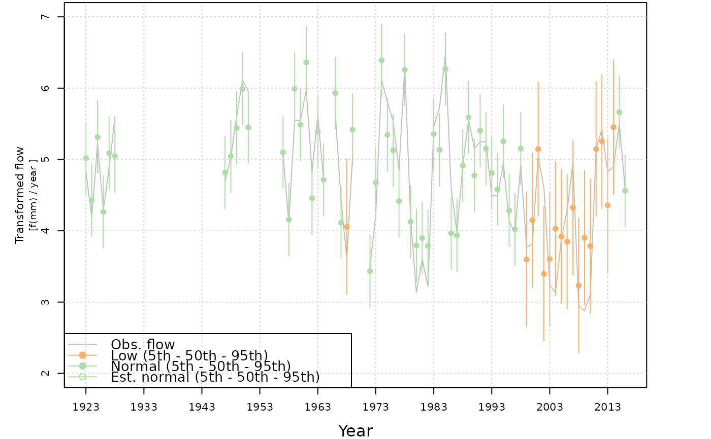

plot produces several figures to visualize pseudo residuals or results of the markov states over time. setInitialYear is required before plot. It is recommend to evaluate the pseudo residuals before the markov states. The pseudo residuals are the probability of an observation occurring at each time-step given the prior observations and latter observations, and these are derived from the conditional probabilities of the observations. The markov states are from the Viterbi algorithm globally decoding the model to estimate the most probable sequence of states.
Usage
# S3 method for class 'hydroState'
plot(
x,
...,
pse.residuals = FALSE,
ind.variable = TRUE,
dep.variable = TRUE,
dep.variable.transformed = TRUE,
cond.state.prob = TRUE,
siteID = NULL,
do.pdf = FALSE
)Arguments
- x
is the fitted hydroState model object.
- ...
additional arguments passed for plotting, none available at this time.
- pse.residuals
option to plot pseudo residuals. Default is FALSE.
- ind.variable
option to plot independent variable over time. Default is TRUE.
- dep.variable
option to plot dependent variable and states over time. Default is TRUE.
- dep.variable.transformed
option to plot transformed dependent variable and states over time. Default is TRUE.
- cond.state.prob
option to plot the conditional state probabilities over time for each state. Default is TRUE.
- siteID
character string of catchment identifier (i.e. gauge ID). Default is NULL. Only recommended when do.pdf = TRUE.
- do.pdf
option to export figures as a pdf. Default is FALSE.
Value
plots to evaluate rainfall-runoff states over time along with observations and the conditional probabilities of each state.
Details
plot
plot produces five figures of psuedo residuals OR up to four figures of the results from the fitted hydroState model. When the pse.residuals is FALSE, the default plot produces all four result figures. Figures are more easily viewed as a pdf exported to the current working directory (do.pdf = TRUE).
psuedo residual figures
A) Time-series of normal-pseudo residuals to ensure the residuals each year are within the confidence intervals.
B) Auto-correlation function (ACF) of normal-pseudo residuals to ensure there is minimal serial correlation in residuals. Lag spikes should be below confidence interval at each lag (except 0).
C) Histogram of uniform-pseudo residuals should show uniform distribution (equal frequency for each residual value)
D) Histogram of normal-pseudo residuals should show normal distribution centered on zero and with no skew
E) Quantile-Quantile (Q-Q) plot where normal-pseudo residuals vs. theoretical quantities should align on the diagonal line. The last plot contains the Akaike information criterion (AIC) and Shapiro-Wilk p-value. The AIC is an estimator to determine the most parsimonious, best performing model given the number of parameters. When comparing models, the lowest AIC is the best performing model. Shapiro-Wilks test for normality in the residuals and a p-value greater than 0.05 (chosen alpha level) indicates the residuals are normally distributed; the null hypothesis that the residuals are normally distributed is not rejected.
markov state figures
A) independent variable: precipitation
B) dependent variable and states: streamflow observations, most likely state, and relative normal state estimate
C) transformed dependent variable and states: transformed streamflow observations and most likely state
D) conditional state probabilities for each state: probability of hydroState model remaining in given state
These figures are often large, and below are a few common errors when the plotting window is too small. Exporting the plots as a pdf is recommend for the pseudo residual figure (do.pdf = TRUE).
"Error in plot.new() : figure margins too large": reset plot window with "dev.off()", enlarge plot area and re-run
plot.residuals."Error in par(op) : invalid value specified for graphical parameter "pin" if the R plot window is not reset with "dev.off", an additional
plot.residualsattempt will result in this error.
Examples
# Load fitted model
data(model.annual.fitted.221201)
## Set initial year to set state names
model.annual.fitted.221201 =
setInitialYear(model = model.annual.fitted.221201,
initial.year = 1990)
## Plot only residuals
plot(model.annual.fitted.221201, pse.residuals = TRUE)

## Plot all markov state figures
plot(model.annual.fitted.221201)

#> NULL
## Plot only dependent variable transformed with markov states
plot(model.annual.fitted.221201,
ind.variable = FALSE,
dep.variable = FALSE,
dep.variable.transformed = TRUE,
cond.state.prob = FALSE)

#> NULL